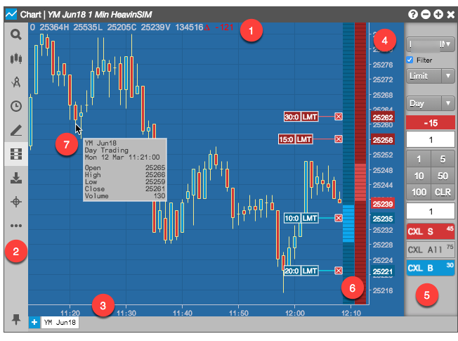
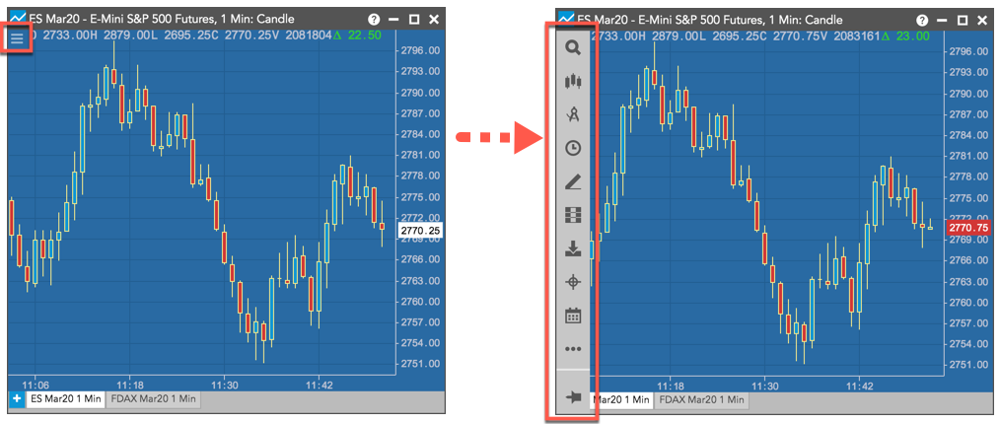

The Chart widget on the TT platform fully integrates charting and analytics into the Trade app by blending historical time series data with continuous real-time market data updates. The Chart uses the same price feed as the market data and order entry widgets (e.g., MD Trader), so the prices on the Chart are identical to what appears in those widgets.
The Chart widget consists of the following components:

This image shows:
To open a Chart widget in your workspace, you can:
The Chart menu provides access to the functionality and settings available for the Chart widget. Click the chart menu icon  in the top left corner of a chart to show the Chart menu.
in the top left corner of a chart to show the Chart menu.

| Icon | Description |
|---|---|
| Opens the Search box and Market Explorer to find an instrument to add to the chart. You can search for instruments, chart types, intervals adn drawing tools. | |
| Contains the available chart types. | |
| Contains a list of technical indicators. | |
| Contains the available time intervals for displaying historical data for the instrument. | |
| Shows the available drawing tools. | |
| Shows the order pane for submitting orders from the chart, as well as viewing working orders and displaying fills. | |
| Downloads a snapshot image of the current chart. | |
| Display a crosshair cursor. | |
| Opens the Trading Schedules widget. | |
| Provides additional options (e.g., adding a comparison study to the chart). | |
| Provides access to the chart settings. | |
| Pins the chart menu to the chart. |